Nøkkelordene jeg valgte er tursko, tursko dame, tursko herre, unisex og hverdagssko. Dette var ord som passet med nettbutikken min, og som hadde blitt søkt etter en del det siste året. Ikke alle ordene var like mye søkt etter, men jeg tok de med fordi de var relevante. Skobutikken er for eldre personer, men akkurat nå er det bare tursko tilgjengelig så det er det som ble hovedfokuset. Grafen viser hvor mye ordene er søkt på i Norge de siste 12 månedene i sammenheng med butikkhandel.
SEO Analyse
Forsiden
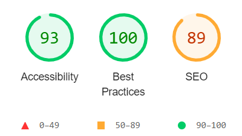
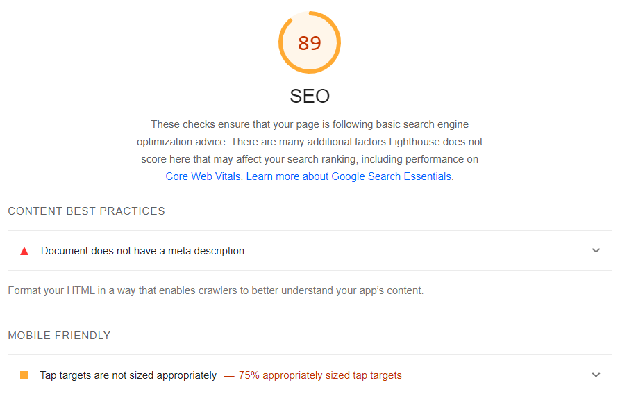
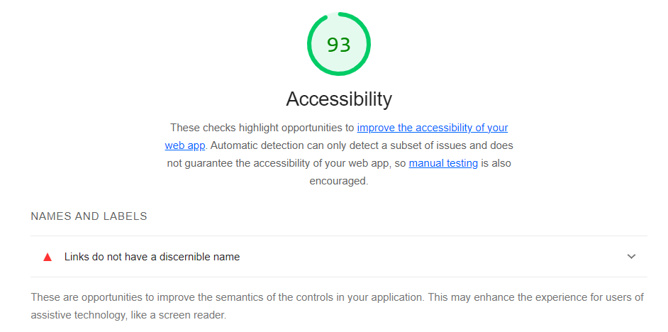
Jeg testa alle tre sidene på Lighthouse, hvor jeg huket av for accessibility, best practices og SEO. Alle sidene fikk 100% på best practices så dette vil ikke bli nevnt noe mer i denne analysen.
Forsiden scoret 93% på accessibility. Det Lighthouse klager på er at linkene/ikonene i headeren ikke har noen decription eller alt-tekst.
Forsiden scoret 89% på SEO. Det er to problemer her. Det første er at det mangler en meta tag for description. Det andre problemet er at linkene/ikonene i headeren er for tette og bør gjøres større, for at det blir lettere å trykke, spesielt på mobil.
Produktsiden
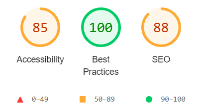
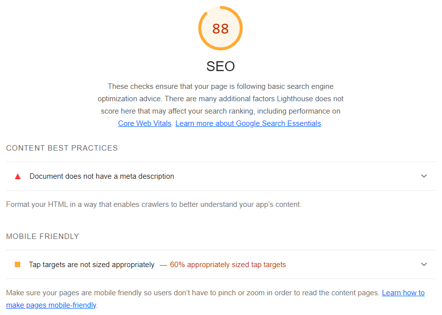
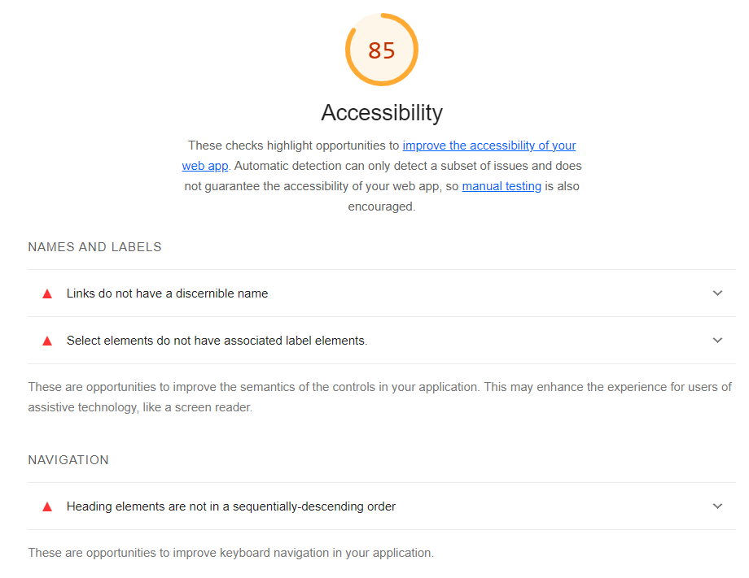
Produktsiden scoret 85% på accessibility. Her er det flere problemer. Det mangler description på linkene i headeren sånn som på forsiden. Så vil den at det skal legges på en label på knappene hvor man velger størrelse og farge på sko. I tillegg har jeg gjort en feil med noen H tagger som må endre nummer/rekkefølge.
Produktsiden scoret 88% på SEO. Den viser at det er samme problem som med forsiden. Det er manglende meta tag for description, og for lite ikon eller område å trykke på i headeren og på velg størrelse/farge knappene.
Retursiden
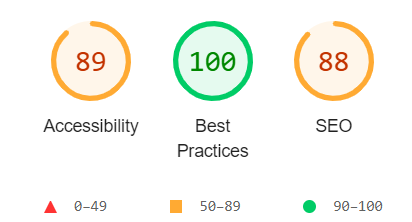
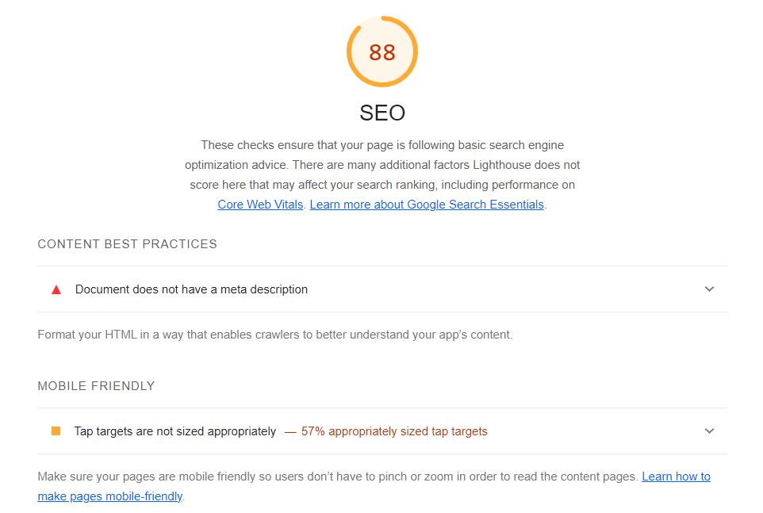
Retursiden scoret 89% på accessibility. Det mangler en description på linkene i headeren og jeg må rette opp i H tagene.
Retursiden scoret 88% på SEO. Det er samme problemer her som på de andre sidene. Manglende meta tag for description og for lite område å trykke på i headeren.
UU Analyse
Forsiden
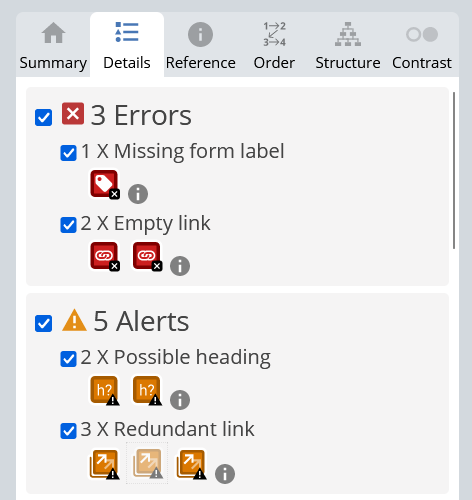
Webaim ga forsiden 3 errors og 5 alerts. Det første den reagerer på er at søkefunksjonen min mangler label. I tillegg klager den på empty links som jeg tror er at den vil at det skal være alt-tekst på linkene slik som Lighthouse også ville. Det er også gjort en feil i H tagene mine som må fikses. Redundant link betyr at det er flere linker til samme sted på nettsiden, dette er jeg ikke sikker på om jeg må endre, for jeg vil jo at brukeren kan navigere på flere måter.
Produktsiden
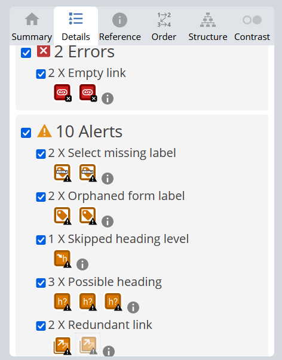
Webaim ga produktsiden 2 errors og 10 alerts. Empty link er at den vil ha description eller alt-tekst på linken i headeren. Det mangler labels på farge/størrelse knappene. I tillegg er labelene på «velg farge/størrelse» satt opp feil (orphaned form label). Så er det flere H tager som må fikses. Og den klager på linker som går til samme sted på siden.
Retursiden
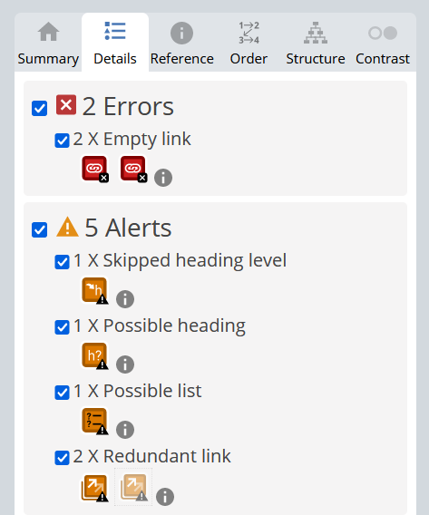
Webaim ga retursiden 2 errors og 5 alerts. Erroren er manglende description på linkene i headeren. Så er det flere feil i H tager og linker som går til samme sted. I tillegg mener den at seksjonen med stegene for retur burde vært en liste.
ChatGPT Analyse
Når jeg skulle bruke ChatGPT til å vurdere koden ba jeg den om dette: Kan du vurdere koden ut i fra et SEO og UU perspektiv, og kan du komme med spesifikke løsninger? Deretter la jeg inn koden for hver side og den kom med løsninger til forbedringer. Det var mye likt som gikk igjen på alle sidene så her er et sammendrag av tilbakemeldingene.
Forslag til SEO-forbedringer
Rett opp skrivefeil i meta viewport fra 1,0 til 1.0.
Lag en mer spesifikk tittel og inkluder nøkkelord.
Lag en mer beskrivende URL, f.eks bytt fra produkt.html til herresko.html.
Lag mer beskrivende alt-tekst.
Lag mer søkevennlig innhold med beskrivende nøkkelord.
Rett opp hirarkiet i H-tagene.
Forslag til UU-forbedringer
Inkluder tastaturnavigasjon i hamburgermenyen.
Legg til ARIA-attributter.
Sørg for nok tekst/bakgrunnsfarge kontrast.
Sørg for at nettsiden er resposiv.
Lag mer beskrivende alt-tekst.
Sammenligning av analysene
Her er en sammenligning av hva de forskjellige programmene reagerte på i koden min. JA betyr at det ble reagert på, NEI betyr at siden ikke reagerte.
ChatGPT
Lighthouse
Webaim
Feil i H-tager: JA
Feil i H-tager: JA
Feil i H-tager: JA
Skrivefeil komma/punktum: JA
Skrivefeil komma/punktum: NEI
Skrivefeil komma/punktum: NEI
Mer/mer beskrivende alt-tekst: JA
Mer/mer beskrivende alt-tekst: JA
Mer/mer beskrivende alt-tekst: JA
Legg til ARIA: JA
Legg til ARIA: NEI
Legg til ARIA: NEI
Legg til nøkkelord: JA
Legg til nøkkelord: NEI
Legg til nøkkelord: NEI
Manglende meta-tag: NEI
Manglende meta-tag: JA
Manglende meta-tag: NEI
Legg til alt-tekst på linker: NEI
Legg til alt-tekst på linker: JA
Legg til alt-tekst på linker: JA
Større linker i header: NEI
Større linker i header: JA
Større linker i header: NEI
Div manglende/feil labels: NEI
Div manglende/feil labels: JA
Div manglende/feil labels: JA
Redundant link: NEI
Redundant link: NEI
Redundant link: JA
Forbedringer
Her er en liste over forbedringer jeg har gjort på nettsiden.
La på en meta description tag på alle sidene.
Retta opp diverse skrivefeil.
Fiksa dicernable name alerten i headeren med aria-labels.
Fiksa diverse feil med label tags.
Fiksa feil i H-tags.
Gjorde om p-tags til ol/li liste på retursiden.
La på mer luft og padding i headeren.
Endret størrelsen og oppsett på valg knappene på produktsiden.
Endret språket fra «en» til «no» siden nettsiden er på norsk.
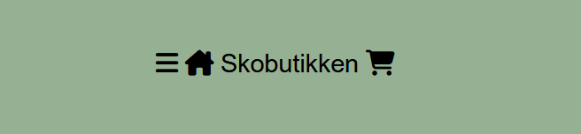
Bilde av header-elementet før forbedringer.
Bilde av header-elementet etter forbedringer.
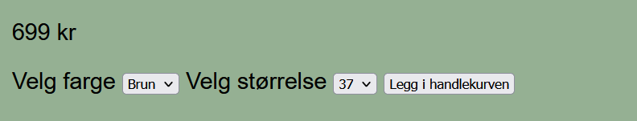
Bilde av valg knappene før forbedringer.
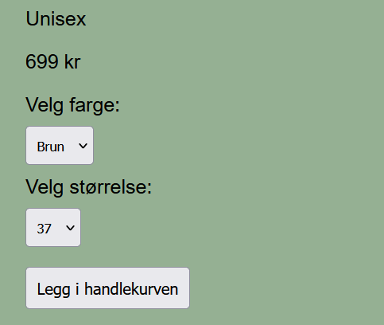
Bilde av valg knappene etter forbedringer.
Bildene over viser de synlige forandringene på nettsiden, mens resten av forbedringene er i selve koden. Bildene under viser scoren fra Lighthouse og Webaim etter forbedringene.
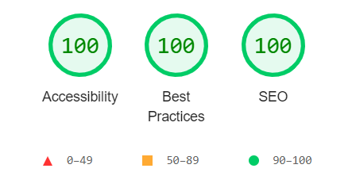
Bildet viser scoren forsiden fikk på SEO analysen andre runde.
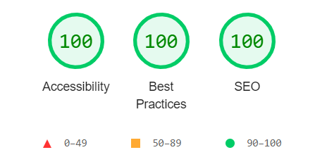
Bildet viser scoren produktsiden fikk på SEO analysen andre runde.
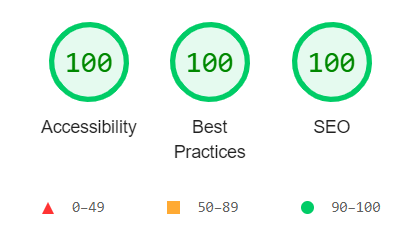
Bildet viser scoren retursiden fikk på SEO analysen andre runde.
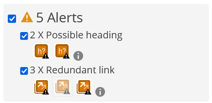
Bildet viser tilbakemeldingen på forsiden fra Webaim, andre runde.
Forsiden har nå ingen errors fra Webaim. Det er fortsatt noen alerts, men disse er ikke like viktige. Det ene er at jeg har linka til samme sted med flere linker, noe jeg vil at det skal være. Det andre er at den mener "699kr" og "unisex" kan være H-tags i stedet for p, men jeg er litt usikker på dette. Så siden det ikke er error lar jeg det stå for nå.
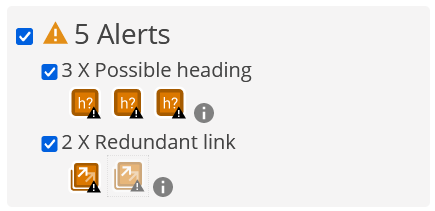
Bildet viser tilbakemeldingen på produktsiden fra Webaim, andre runde.
Produktsiden har ingen errors, men får samme alerts som forsiden. Jeg ser at webaim gjerne vil bytte p-tags til H om teksten blir for kort.
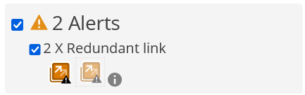
Bildet viser tilbakemeldingen på retursiden fra Webaim, andre runde.
Retursiden har ingen errors. Kun 2 alerts som handler om at en side er linket til med flere linker.
Generelt er jeg veldig fornøyd med resultatene etter forbedringer. Det er ikke lenger noen "alvorlige" feil og det lille som er igjen av alerts er pirk fra webaim. Det som gjorde at scoren endret seg var at jeg tok gode notater av feilene mine og fiksa det så godt jeg kunne, det var hjelpsomt siden den vanlige html-validatoren ikke sier ifra om de samme feilene.
 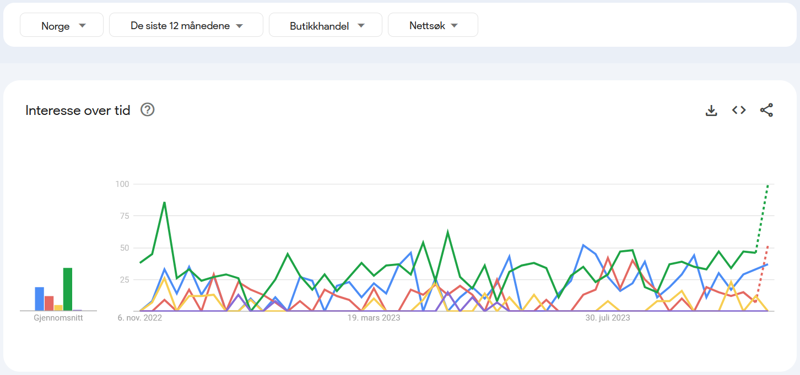
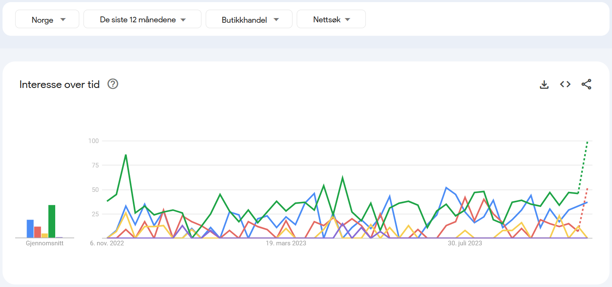